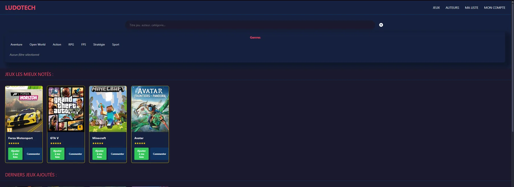
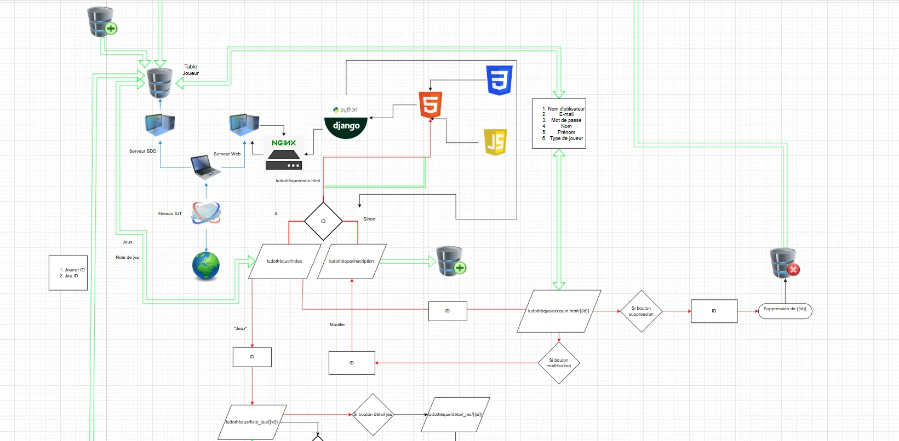
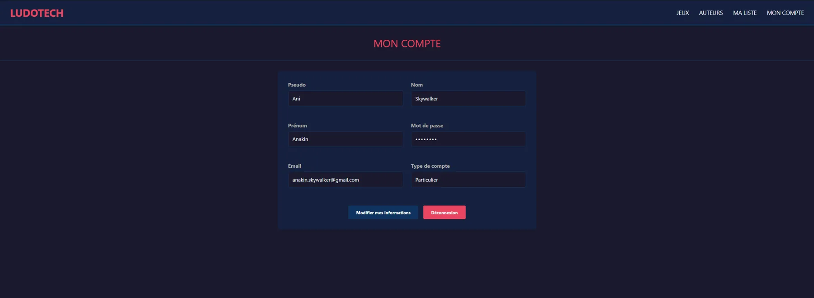
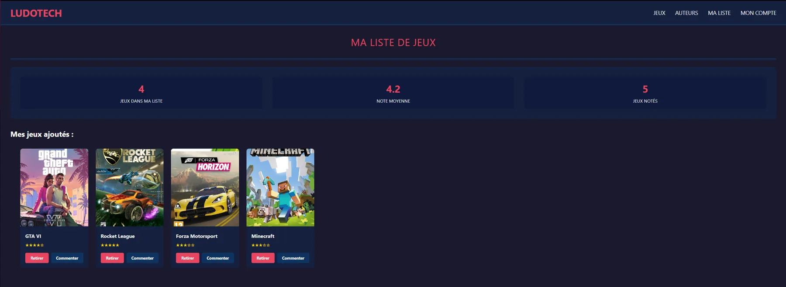

Ludothèque web façon Steam
Application web complète de gestion d'une ludothèque, inspirée de Steam, déployée sur une machine virtuelle Linux.
- Cadre
- BUT R&T
- Équipe
- 3 étudiants
- Déploiement
- Nginx + Gunicorn
- Statut
- Terminé
01En résumé
Objectif
Répondre à un besoin métier : gérer jeux, auteurs, éditeurs et joueurs, avec notes et commentaires.
Ma contribution
Modélisation de la base, développement Django (front et back) et déploiement en production sur Linux.
Résultat
Application fonctionnelle et déployée, gérée sous Git avec planification sur diagramme de Gantt.
02Le projet
- Gestion des jeux avec catégories, auteurs et éditeurs.
- Inscription et authentification des joueurs (professionnels ou particuliers).
- Commentaires, notes et moyennes par jeu et par type de joueur.
- Listes de jeux personnalisées, fiches détaillées et import de jeux par fichier CSV.
L'application est déployée sur une VM Linux avec une architecture Nginx + Gunicorn et une base MySQL.
03Démarche
- Analyse des besoins : cahier des charges et modélisation de la base de données.
- Architecture : choix techniques : Django, MySQL, Nginx.
- Organisation : répartition des tâches sur un diagramme de Gantt, versionnage sur GitHub.
- Réalisation : base de données, logique back-end et interface.
- Documentation : procédures d'installation et documentation technique.
04Technologies
- Python / Django
- Framework web, modèles, vues, templates
- MySQL
- Base relationnelle
- Nginx + Gunicorn
- Serveur web et serveur d'application WSGI
- Linux
- Système du serveur de production
- Git / GitHub
- Versionnage et travail collaboratif
05Galerie




06Compétences BUT mobilisées (Apprentissage Critique)
AC13.01Utiliser un système informatique et ses outils
Déploiement de l'application sur une VM Linux en production : configuration de Nginx, Gunicorn et MySQL, et utilisation des outils de développement associés.
AC13.02Lire, exécuter, corriger et modifier un programme
Développement back-end en Python/Django : lecture et modification du code, débogage des vues et correction des erreurs au fil de l'avancement.
AC13.03Traduire un algorithme, dans un langage et pour un environnement donné
Implémentation de la logique métier (moyennes par jeu et par type de joueur, listes personnalisées, import CSV) en Python/Django avec les modèles et vues adaptés.
AC13.04Connaître l'architecture et les technologies d'un site Web
Architecture complète du site : Django côté application, MySQL pour les données, Nginx et Gunicorn pour le service HTTP et WSGI. Maîtrise du cycle requête HTTP --> vue --> template --> réponse.
AC13.05Choisir les mécanismes de gestion de données adaptés au développement de
l'outil et argumenter ses choix
Choix de MySQL comme base relationnelle, modélisation des entités (jeux, auteurs, éditeurs, joueurs, commentaires, listes) et justification des relations et contraintes retenues.
AC13.06S'intégrer dans un environnement propice au développement et au travail
collaboratif
Versionnage sur GitHub, répartition des tâches sur un diagramme de Gantt et travail en équipe de 3 sur l'ensemble du cycle de développement.
07Bilan
Ce que j'en retiens
Le développement d'une application web complète, de la modélisation des données au déploiement en production, et l'importance de l'organisation et de la communication dans une équipe technique.
Avec du recul
La gestion du temps a été difficile, avec deux autres projets en parallèle. Avec plus de recul et de planification, j'aurais amélioré plusieurs parties de l'application.